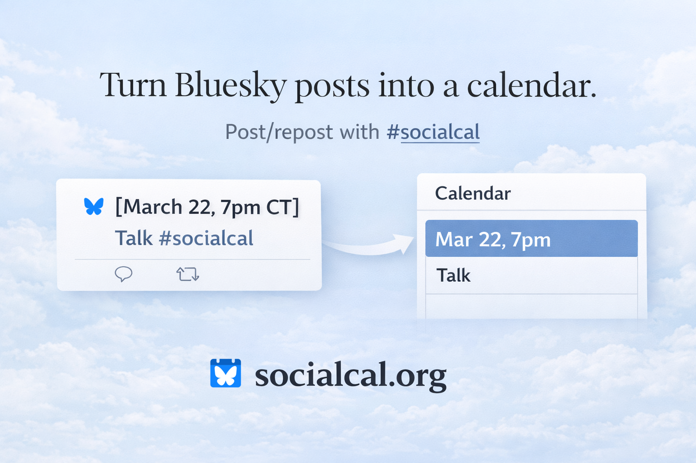

SocialCal
User Manual (v1)
Turn Bluesky posts into a live calendar. See examples on Bluesky under #socialcal.
Add this URL to your calendar app:
https://socialcal.org/ics?handle=<your-handle>How It Works
SocialCal scans:
- Posts you write
- Posts you repost
- Posts you reply/quote-post to (see “Using Replies/Quote-posts”)
It looks for the hashtag:
#socialcalAdding to Your Calendar
Use:
https://socialcal.org/ics?handle=<your-handle>
For example, @jasonhartline.bsky.social would use calendar URL https://socialcal.org/ics?handle=jasonhartline.bsky.social.
In common calendar apps:
- Google Calendar → “From URL”
- Apple Calendar → “New Calendar Subscription”
- Outlook → “Subscribe from Web”
Note: Some calendars such as Google Calendar pull external URL ICS feeds infrequently. Your most recent events can take up to 24 hours to appear. Use Viewing and Troubleshooting to see your #socialcal calendar events immediately.
Viewing and Troubleshooting
To see the events SocialCal is generating from your posts, visit:
https://socialcal.org/show?handle=<your-handle>To include parsing errors in the report:
https://socialcal.org/show?handle=<your-handle>&errors=trueBy default, /show hides older events using your browser’s local timezone.
- Timed events remain visible until 12 hours after they end.
- All-day events remain visible through their day.
To show all parsed events, including older ones, use:
https://socialcal.org/show?handle=<your-handle>&all=true
For example, @jasonhartline.bsky.social would use troubleshooting URL https://socialcal.org/show?handle=jasonhartline.bsky.social&errors=true. If there are no errors, then none are shown.
Creating an Event (Simple Case)
Write a post in this format:
[date and time with timezone] Title of Event
Details about the event #socialcalExample:
[March 22 7pm CT] Drinks at Maria’s
Back room. Bring friends. #socialcalThis becomes:
- Title: Drinks at Maria’s
- Time: March 22, 7pm Central Time
- Description: Back room. Bring friends.
See examples on Bluesky under #socialcal.
RSVPing to a SocialCal Event Post (Simple Case)
If you repost a post already containing #socialcal and valid event formatting, that post becomes an event on your calendar.
Time & Date Format
When creating a SocialCal event post, the first line of your post must start with a bracketed date/time:
[March 5 9am CT] Weekly Coffee #socialcal
Timed Events (timezone required)
[March 5 9am CT]→ 60 minute event (default duration)[March 5 9am-11am CT]→ explicit time range[tomorrow 6pm ET]→ relative dates supported
For timed events, a timezone is required. Supported formats:
ET, CT, MT, PT,
IANA zones like America/Chicago,
Z, or ±HH:MM.
All-Day Events (timezone optional)
[March 5]→ single-day all-day event[March 5–10]→ multi-day event (inclusive)[March 5-10]→ hyphen also supported
Date-only events become all-day calendar entries. Date ranges are interpreted as inclusive (March 5–10 includes both March 5 and March 10).
Relative dates such as [today], [tomorrow], or
[Wednesday] are supported for all-day events.
When no timezone is specified, relative dates are interpreted using the post time in the Pacific Time (PT) zone. For example [Wednesday] is the next Wednesday that is either today or in the future from the perspective of someone posting now but in Pacific Time.
Using Reposts to Add Events
If you repost a post containing #socialcal and valid event formatting, that post becomes an event on your calendar.
Adding atmo.rsvp Events
SocialCal can add public atmo.rsvp events without requiring an atmo.rsvp login.
If a Bluesky post contains both an atmo.rsvp event link and #socialcal, repost it to add that event to your calendar.
https://atmo.rsvp/p/<actor>/e/<event> #socialcalIf the post with the atmo.rsvp link does not contain #socialcal, reply to it or quote-post it with #socialcal.
The atmo.rsvp event page is included in the calendar event description.
Using Replies/Quote-posts to Add Events
Replies/quote-posts let you turn someone else's post into an event. Replies/quote-posts are only considered if your reply/quote-post contains #socialcal.
1) Parent post already contains a full event
If you reply/quote-post with #socialcal to a post that already has the correct format and includes #socialcal, that parent post becomes an event.
Parent:
[March 22 7pm CT] Seminar
Room 240. #socialcalYour reply/quote-post:
Looking forward! #socialcalResult: The parent post becomes an event.
2) Reply/Quote-post supplies the event header
If the parent post does not contain event formatting, your reply or quote-post can provide it using a one-line header:
[date and time with timezone] Title of Event #socialcalParent (details):
Dinner at Maria’s. Back room.Your reply/quote-post (header):
[March 22 7pm CT] Dinner #socialcalResult:
- Date/time/title come from your reply.
- Event details/description come from the parent post.
3) Hashtag-only replies
If a reply chain already established either:
- a full event post, or
- a header reply
then a later reply that contains only:
#socialcalwill combine the pieces and create the event if possible. This allows simple “add this” interactions without repeating the header.
What Gets Ignored
Posts are skipped if:
#socialcalis missing (except when a reply with#socialcaltriggers inclusion via the reply rules)- Date/time is missing
- A timed event is missing a timezone
- The timezone is invalid
- The required formatting is malformed
- The referenced parent post is unavailable
Best Practices
Keep formatting clean.
Good:
[March 22 7pm CT] Dinner
Back room at Maria’s. #socialcalAvoid:
Dinner March 22 at 7 CT #socialcalRemember: the timezone must be the last token inside the brackets.
Deduplication
If multiple posts/replies reference the same event, it will appear only once.
That’s it — post events with #socialcal, and your calendar stays up to date.
Open Source
SocialCal is open source at https://github.com/jasonhartline/socialcal and maintained by @jasonhartline.bsky.social.